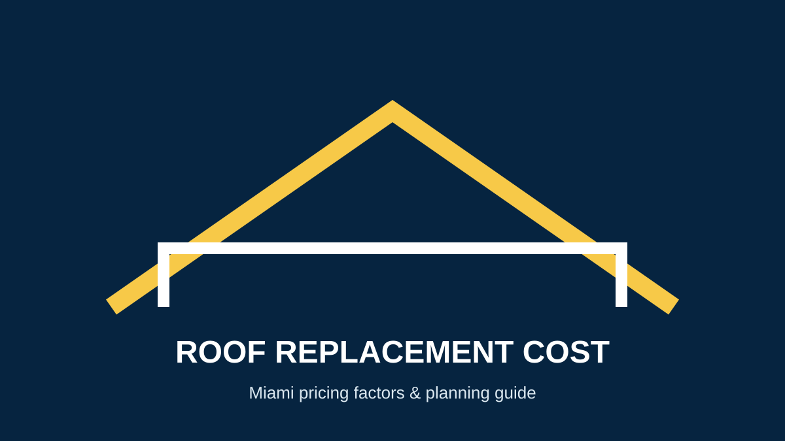

Roof Replacement Cost in Miami, FL
If you search for roof replacement cost in Miami, the most useful answer is not one universal price. A roof estimate changes with the roof's size and slope, existing damage, chosen material, tear-off, access, ventilation, permits and the requirements that apply to the property.
What determines the cost of a new roof in Miami?
- Roof size and complexity: more roofing area, hips, valleys and penetrations generally mean more material and labor.
- Existing roof condition: damaged decking, flashing or other components can add work after the old covering is removed.
- Material: asphalt shingles, tile, metal and low-slope systems have different product, labor and installation requirements.
- Removal and disposal: tear-off, hauling and site protection are part of many replacement projects.
- Permitting and code requirements: Miami-Dade publishes specific roofing permit forms and HVHZ requirements.
- Access and property conditions: difficult access, steep slopes and limited staging space can affect labor.
Why Miami-Dade requirements matter
Miami-Dade County provides dedicated roofing permit forms, including HVHZ forms for shingle, metal, tile and other roof systems. Product Control also maintains a search for approved products and systems. That means a Miami roof estimate should account for the actual assembly and approval requirements rather than relying on a generic national price.
See Miami-Dade roofing permit requirements and search Miami-Dade product approvals.
Should you repair or replace the roof?
A localized problem may be repairable, while widespread deterioration, recurring leaks, storm damage or an aging roof can make replacement more practical. Start with a professional assessment instead of choosing based only on an online cost calculator.
Read our Miami roof replacement service guide, or compare the warning signs in Do I need a new roof?.
Questions homeowners ask
How much does a new roof cost in Miami?
There is no reliable one-size-fits-all figure. The project must be priced from the roof area, system, condition, access and applicable requirements.
Can I get an accurate price from a website?
Online ranges can help with early research, but an on-site assessment is more useful because hidden conditions and local requirements can materially change the scope.
Do Miami-Dade roofs need permits?
Roofing projects use Miami-Dade's roofing permit process and forms. The exact permitting path depends on the property and project, so verify current requirements with the applicable building department.
Get a Miami roof replacement estimate
Hyper Roof can review the roof condition, explain replacement options and prepare a project-specific recommendation for your property.
Request a Free Estimate →Sources and further reading
- Miami-Dade County — Roofing Permits
- Miami-Dade County — Roof permit forms
- Florida Building Code Online
Related Miami roofing guides
Roof replacement · Roof repair · Roof inspection · Roof replacement cost · Contact Hyper Roof